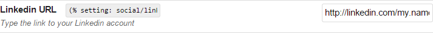
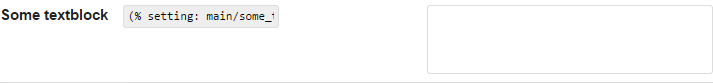
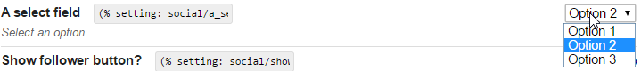
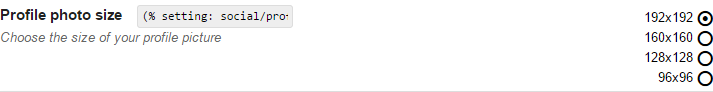

Introduction
GS Custom Settings is a plugin for GetSimple CMS which lets webmasters/ site managers, theme and plugin developers implement and use their own custom settings for output, configuration, and cross-plugin/-theme communication. It's a bit like the custom fields plugin, but not for pages. The plugin offers 8 different types of input to choose from, 3 access levels, per-user editing permission, and an easy UI to create, import and export the settings. Once activated, a new tab 'Site', is added, where one will find all settings created with the plugin, grouped by sidebar tab. View a screenshot of the UI in Manage mode or Edit mode
{kind=link}
{kind=link}
The plugin is built on Knockout JS and handles almost all logic client-side, except for plugin registration, hooks, path resolving, and handling server requests. Data is sent and saved through AJAX. Furthermore, the plugin provides an interactive notification service and a JS localization system. The language file for this plugin is also in JSON format.
GS Custom Settings is compatible with PHP 5.2+ (might work with PHP 5+, untested) and all browsers except Internet Explorer 8 and older Managing settings also works in IE8 (editing doesn't). Some features might not work on some browsers. See Known Issues for more information. If you find bugs or have feature requests or questions, feel free to open a new issue in the Github repo or write a post on the GS support forum.
Features
- Custom settings for site managers, plugin and theme developers
- 5 different setting types (select, radio, text, textarea, checkbox) + 3 fancy variants (FontAwesome)
- 3 access levels for settings (normal, hidden, locked)
- Output settings in pages with
(% setting:tab/setting %)or in PHP withget_setting('tab','setting') - Restrict user editing permission per user
- Feature-rich editing in 'edit' mode with multiselect, batch setting adding/removing & keyboard shortcuts
- Responsive feedback through notifications
- Import (IE10+ & other browsers)/ Export settings for re-use through the GUI
- Build and export settings directly through the UI for your plugin/ theme
- Extend existing themes and plugins with custom settings
- Access settings from other themes and plugins
- (almost) fully i18n, even custom theme and plugin settings I18n-enabled
- Available in English, French & Dutch
And many more in future releases...
Download, install, upgrade
Download the latest (and other) version(s) of this plugin on the GetSimple Extend Plugin page. The latest version of this plugin is 0.2. To install, simply unzip to GS plugins directory. If you're upgrading from 0.1, the entire directory structure and data files will be automatically updated, provided that you first deactivate KO Site Settings, then activate the new Custom Settings.
User Guide
Advised use
It is required that every setting and every tab have a different lookup value, the plugin will not save updates if there are duplicate lookups. It is also important to note that if you change this value, you will have to update your PHP calls. Therefore it is advised not to change the setting's tab/ label after putting it to use.
Switching between modes
The Site Settings plugin allows you to switch modes between Manage and Edit. Manage mode only allows changing the value of visible, non-locked inputs, and is meant for the webmaster/ website manager; in Edit mode, (primarily) for the developer, one can create and modify settings. Simply click the button to toggle the mode.
Editing tabs

Editing tabs is pretty self-explanatory (see image to the right). Click the tab label to edit it, and click the icons to complete any of the following actions, from left to right:
- Add a new tab
- Remove this tab
- Move this tab up
- Move this tab down
There are 3 types of tabs: site tabs, theme tabs and plugin tabs, displayed in that order respectively. Only site tabs are visible in Edit mode/editable (but you can extend plugin and theme tabs manually). You can also extend plugins/ themes which do not use GS Custom Settings trivially by following the instructions in For Plugin/ Theme developers.
Editing settings
To view setting details for all settings, toggle the Open/ Close All button in the top-right nav. The settings toolbar allows any of the following actions, from left to right:
- (De)select all settings
- Show/ Hide all settings' details
- Add x (x = items in selection) new settings
- Remove all selected settings
- Move all selected settings up
- Move all selected settings down

Every setting also has the two first buttons to (de)select individually & hide/show individually. As of v0.2, some setting actions can also be achieved using keyboard shortcuts, eg:
- SHIFT + click selects all settings between the setting first and last clicked.
- Ctrl + click adds the clicked setting to the selection
- DELETE removes all selected settings
Editing setting properties
Each setting has 6 (or 7) modifiable properties: lookup, label, descr, type, value, access [, options]. Here's what they are used for/ their possible values:
lookupis the identifier used by PHP to link translations and return settings through the API functions. It is important to never have duplicate lookups in the same tab to avoid returning the wrong setting.labelis the setting's title, displayed inManagemode, and should be max 5-10 words.descris a setting's additional description, displayed inManagemode.valueholds the setting's value. For text inputs (text, textarea) this is simply the text entered, for checkbox inputs (checkbox, switch, fancy checkbox) a boolean (true/ false), and for option inputs (radio, select, fancy radio) a zero-based index.-
typeis a setting's type. It determines display inManagemode and through calls toget_setting. There are 3 setting types, each with more variants:- Text inputs (textarea, text)
- Checkbox inputs (checkbox, fancy checkbox, switch)
- Option inputs (radio, fancy radio, select)
-
accessdetermines how (in)visible the input is inManagemode:Normalis defaultLockedshows the input for display, but editing is diasbaled,
ideal for eg, fixed passwords or tracking codes.Invisiblehides the input fromManagemode,
ideal for meta properties, eg. plugin/theme versions or paths, CSS killswitch.
optionsis only present if the input is of type select, radio or fancy radio, and holds the options for the input.
Note: changing an input's type will reset its value, but changing to another subtype on the same type will not. Eg, changing from radio to fancy radio, the value will be preserved, but not from radio to checkbox.
Below is a preview of what the 8 input types look like in Manage mode.
Text
Textarea
Checkbox
Radio
Select
Fancy checkbox
Fancy radio
Switch
Outputting settings
To get a setting in a page (in the WYSIWYG editor), simply type (% setting: tab/setting %).
To get a setting in themes and components, type <?php get_setting('tab/setting') ?>.
To process the return value before outputting it, type <?php return_setting('tab/setting') ?>. The easiest way to get this code, is to copy to select and copy paste the code field next to the input (the WYSIWYG code is visible in Manage mode, the PHP code in Edit mode.) Beneath is a listing of the return values for each type of input (the 'fancy' versions as well as switch simply make use of font icons instead of standard inputs):
| Input types | With get_setting |
With return_setting |
text |
Returns the text content from the field | Returns the text content from the field |
textarea |
Returns the text content from the field | Returns the text content from the field |
checkbox |
Returns 'on' (checked) or 'off' (unchecked) |
Returns TRUE (checked) or FALSE (unchecked) |
radio |
Returns the selected option's text value. | Returns the selected option's zero-based index. |
select |
Returns the selected option's text value. | Returns the selected option's zero-based index. |
switch |
Returns 'on' (checked) or 'off' (unchecked) |
Returns TRUE (checked) or FALSE (unchecked) |
fancy checkbox |
Returns 'on' (checked) or 'off' (unchecked) |
Returns TRUE (checked) or FALSE (unchecked) |
fancy radio |
Returns the selected option's text value. | Returns the selected option's zero-based index. |
For webmasters/site managers
Importing settings
You can import settings by clicking the import button (in v0.2, will not work if your browser is IE9 or below). Make sure your file is valid JSON and your filename contains the string theme_data (for theme settings), plugin_data (for plugin settings) or tabname_data (for separate site tabs). For importing multiple site tabs, your file should be named data.json. Importing settings will: overwrite settings that already exist, and add new settings if they don't. Importing settings does not replace an entire tab or remove settings not present in the import. If you prefer you can also manually import settings by copying previously exported settings files to /data/other/custom_settings.
Exporting settings
You can export settings simply by clicking the export button. You can export 1) all site settings by choosing 'Site Settings', 2) a separate site tab (by name), 3) a separate plugin tab (by name), and 4) the theme settings of the currently selected theme by choosing 'Theme Settings'. You can also manually backup all settings by making a copy of /data/other/custom_settings.
Restricting editing permission
Go to root/data/users/ and edit the XML file for the user you want to restrict editing permissions for. Simply add an XML node <KO_EDIT>FALSE</KO_EDIT> and you're done. TRUE also works (to allow editing) but this is the default, so it doesn't really matter. In one of the next updates, this will be included in the plugin UI.
For theme developers
GS Custom Settings allows you to build custom settings for your theme through an easy UI,
and they can even be multilingual! No need for building a custom plugin like the InnovationPlugin. After you have downloaded Custom Settings, and installed it on your local/ test site (just like other GS plugins), go to Site tab, switch to Edit mode, create a new tab (name it however you like), add all the settings you need, and in the list toolbar, in the select next to Export tab as:, choose Theme.
If for some reason the file isn't automatically named settings.json, rename it to that.
The descriptions/ labels/ values exported will be used as default values in the default language. If you want, you can add more languages by creating a subdirectory in your theme named lang.
For example a simple GS theme with trilingual custom settings would have a directory like this:
Theme root
├─ assets/
├─ images/
├─ style.css
├─ template.php
├─ functions.php
├─ settings.json (with en_US as standard)
└─ lang/ (optional)
├─ fr_FR.json
└─ de_DE.jsonThe only translatable strings are a setting's label,descr and options (if the setting is a select, radio or fancy radio). For each of these, you should prefix the property with the setting's lookup. The language files in the lang directory should have a strings object holding all strings for the settings. You can optionally add a meta object containing information about the translation version, author, date etc.
{"meta": {"author":"me"}, /* meta is optional */
"strings": {
"mysetting_label": "Label",
"mysetting_descr": "Description",
"mysetting_options": [
"option1",
"option2",
"option3"
],
"mysecondsetting_label": "Label 2",
"mysecondsetting_descr": "Description 2"
}
}You're set! When your theme is activated in the GS theme tab, your settings will appear in the Custom Settings sidebar in the tab Theme settings (GS tab Site). The data is saved to /data/other/custom_settings/theme_data_<themename>.json.
For plugin developers
GS Custom settings provides a sleek GUI for building and (later) updating, or managing (by third parties) your plugin's settings. In your plugin's directory (create one if you didn't have one already, and give it the same name as your plugin's ), you should have a valid settings.json file, create a lang subdirectory (if
- Create a plugin directory with the same name as your plugin's main
.phpfile if you haven't already. -
In this directory you should have a valid JSON settings file, named
settings.json. You can build this either:- Manually: If you choose this, make sure your file has the required format, and your JSON contains no errors. You can test this with JSONlint.
- Through the plugin's GUI (easiest):. To do so, install the plugin on your test site, go to Site tab, switch to Edit mode, create a new tab, give it your plugin's name, and add all the settings you need. When ready, in the toolbar's
Export tab as:dropdown, choosePlugin. Save the file assettings.jsonin your plugin's directory.
- If you want your plugin to be multilingual, create a
langsubfolder in your plugin folder, and include all language files with PHP locale used by GetSimple (eg,en_US, fr_FR, de_DE). Translatable setting properties are:label, descr, options. The format of the JSON file should be as in the sample language file in the Attachments section.
Your plugin directory should look like this for GS Custom Settings to work:
/plugins/
├─ your_plugin.php
└─ your_plugin/
├─ settings.json (with default language)
└─ lang/ (optional)
├─ fr_FR.json
└─ de_DE.jsonThe only translatable strings are a setting's label,descr and options (if the setting is a select, radio or fancy radio). For each of these, you should prefix the property with the setting's lookup. The language files in the lang directory should have a strings object holding all strings for the settings. You can optionally add a meta object containing information about the translation version, author, date etc.
{"meta": {"author":"me"}, /* meta is optional */
"strings": {
"mysetting_label": "Label",
"mysetting_descr": "Description",
"mysetting_options": [
"option1",
"option2",
"option3"
],
"mysecondsetting_label": "Label 2",
"mysecondsetting_descr": "Description 2"
}
}GS Custom Settings provides 2 hooks for your plugin's functions. To use them, do:
add_action('custom-settings-init', 'myFunctionOnInit')to act upon settings after they are globalized. (executes every time the plugin is loaded by GS)add_action('custom-settings-load', 'myFunctionOnLoad')to act upon settings before they are loaded. (executes only when the Custom Settings 'Site' tab is opened).
You can also output a link to your custom settings in your plugin tab by using <?php get_tab_link('myplugin','link title') ?>. When clicked, it will open the relevant item in the Custom settings sidebar.
It should be noted that you don't need to manually add a hook to initialize your settings. As soon as custom_settings.php is included in the site, the settings.json file from your plugin's settings (if it is activated) will be automatically added to the custom settings UI. You should only use functions like remove_setting and set_setting to update settings from an old to a newer version. If so, be sure to include a hidden version setting to check.
Plugin data is saved to /data/other/custom_settings/plugin_data_<yourpluginname>.json.
PHP API
Functions
get_setting($tab, $setting)
// @param {string} $tab - lookup property of the tab to search in
// @param {string} $setting - lookup property of the setting to outputOutputs the setting's value for display. This differs by setting type.
- If the setting has options, the text from the selected option (in default language) will be displayed.
- If the setting is a checkbox/ switch/ fancy checkbox,
onwill be displayed iftrueandoffiffalse. - If the setting is text/ textarea, the
valueis returned as it was last saved.
return_setting($tab,$setting,$prop=NULL)
// @param {string} $tab - lookup property of the tab to search in
// @param {string} $setting - lookup property of the setting to return
// @param {string} [$prop=NULL] - (Optional) A single property of the setting to returnReturns the setting entirely as an array, or one property of it (if $prop !== NULL).
When returning a setting's value:
- If the setting has options (eg
select/ radio), the return is a zero-index based number (0 is the first option). - If the setting is a
checkbox/ switch/ fancy checkbox, the return istrueorfalse. - If the setting is text/ textarea, the
valuestring is returned as it was last saved.
get_tab_link($tab=NULL, $linkText='settings')
// @param {string} [$tab=NULL] - (Optional) Empty, lookup property of
// lookup property of a plugin (basename) or 'theme_settings', or a site tab
// @param {string} [$linkText='settings'] - (Optional) A custom text for the <a> elementOutputs a link to the settings from the active theme (with $themeOrPlugin set to theme_settings), to an activated plugin, a site tab, or just the GS Custom Settings tab (if $themeOrPlugin is NULL). You can also set a $linkText for custom link text (default is 'settings'). The link will activate the tab given as $themeOrPlugin: useful if you want to include a link to settings from your plugin's page especially.
set_setting($tab, $setting, $value)
// @param {string} $tab - lookup property of the tab to search in
// @param {string} $setting - lookup property of the setting to return
// @param {string|array} $value - The property (ies) to modify.(Experimental) Sets a given setting's properties if an array is given as value, or changes the settings' value if $value is a string. Be careful when using this function, as the code will be executed over and over again, forcing properties set by the function to overwrite those set in the UI. Note that the function does not write to a file, but modifies/ adds to a global, and changes will only persist if the data is saved. You should normally only use this function conditionally (eg, if a version setting is not up to date)
remove_setting($tab, $setting)
// @param {string} $tab - lookup property of the tab to search in
// @param {string} $setting - lookup property of the setting to remove(Experimental) Removes the given setting in the given tab. You should only use this function conditionally (eg, if a version setting is not up to date)
Hooks
v0.2 doesn't allow updating a plugin's settings yet (from old to new version). Future versions will include an automatic file update.
add_action('custom-settings-init', $function)
// @param {string} $function - the function you want to execute right after settings are globalized.Hook that executes right after settings are globalized. Use it to act upon settings saved in the data files.
add_action('custom-settings-load', $function)
// @param {string} $function - the function you want to execute before settings are loadedHook that executes before settings are loaded into the UI. (called through the plugin UI on load). It's worth to point out that this function doesn't directly save settings to a file. It merely adds them to the plugin UI on load, and they will only be saved, if the user hits Save updates.
Plugin info
Dependencies
GS Custom Settings includes:
Known issues
Find the list of currently known issues on Github
25/02/2015 - V. 0.2 public test - Settings import only works with IE10 & up, provide fallback - When repeatedly batch editing settings, selection might bug or actions might not be executed on entire selection - Repeatedly importing settings for the same tab without reloading the page/ importing settings for another tab first doesn't work
Planned features
- Integration with Multi User plugin - 'Section title' settings (delimiters of different sections of settings inside a tab) - URL/ Image fields - Version checking & setting updates for plugins - Setting user permissions through the UI - multilingual text/ textarea settings (mainly for output) - Browser testing on Mozilla Firefox and IE (not done yet) - Work away bugs in multiselect & keyboard shortcut features - Ability to build plugin language files through the UI - Add accesskeys & more keyboard shortcuts for saving, exporting etc. - Add beforeUnload pagecheck to prevent unsaved edits loss - Add ability to move settings from one tab to another - Add automatic settings update when plugins are updated - Add setting search - Add custom settings for components
Changelog
30/03/2015 - V. 0.2
New:
- Fully translatable, (almost) no hard-coded values anymore
- Future Github repo at http://webketje.github.io/gs-custom-settings (issue tracking)
- Complete UI overhaul, including:
- tab/setting actions moved to one toolbar to unclutter the UI
- opening a tab in edit mode is the same as in manage mode (used to be through icon)
- Settings can now be batch selected/(re)moved/added
- settings keyboard functionality (Ctrl, Shift for multiselect & Delete)
- Import & export data directly from the UI as backup/ transfer to other site.
- Export tab directly to JSON for plugin/theme dev with custom settings.
- Enhanced, translatable notification manager
- Theme developers can now register their custom settings, i18n-enabled.
- Plugin developers can now register their custom settings, i18n-enabled.
- Added security token check to AJAX filehandler.
- Added PHP API with variable caching for better performance
- Permissions can be restricted per user by adding a false node to the user.xml
- Added languages French, Dutch.
Changed:
- Removed the ability to view all tabs in one (performance)
- Plugin folder ko_base deleted, all contents moved into one folder
- Renamed plugin more appropriately to 'Custom settings' as the focus and intent shifted away from original design.
- Added readme.md to ZIP package with some basic instructions
- Setting lookups 'tokens' must now be set manually
- Settings in the plugin's PHP functions must now be retrieved with function($tab, $setting) instead of 'tab/setting'
Bugfixes:
- Fixed array dereferencing issues. Plugin should now be compatible with PHP 5.2+
- Fixed .htaccess for settings data. No longer accessible through browser/ HTTP requests (safer)
- Fixed 'switch' input saving empty options array
- Fixed moving a tab up or down causing settings' tab field to be changed
- Fixed plugin not loading default language in case language file is missing
- Clicking labels now automatically moves focus to the relevant inputs
- JSON data is now formatted properly when saved, both through Javascript and PHP
- Buttons in sidebar now properly disabled when unusable
18/02/2014 - V. 0.1 (Alpha)
Initial launch